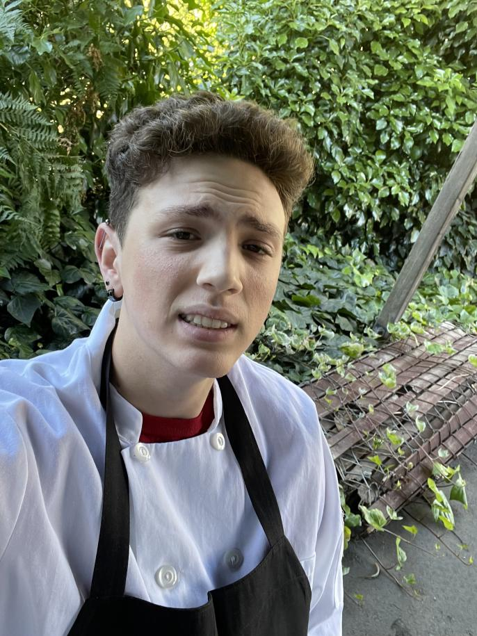
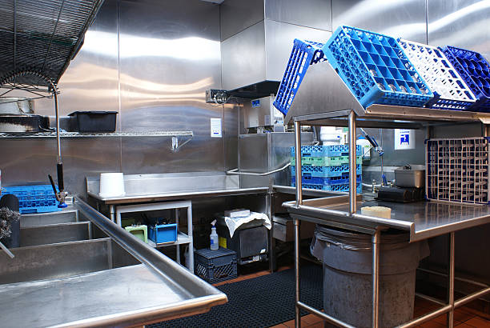
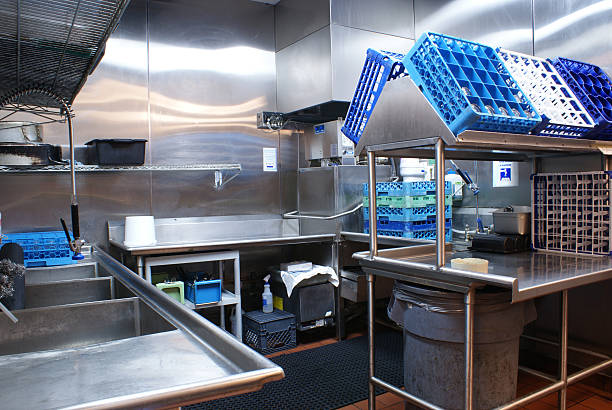

Theodorus Ruiz
I experience working as a busser. I worked the position for a year. I was tasked with clearing and setting up tables, opening and closing the restaurant, and assisting servers.
I have experience working as a dishwasher. I worked the position for a year. My job was to cookware from the kitchen staff and utensils and plates from customers. After service ended and I finished cleaning all the dishes, I assisted the chefs with cleaning the kitchen
I have two months experience working as a garde manger (garm chef). This means that I ran apetizers and desserts. I worked beside our head chef and assisted with preping and later cleaning the kitchen.
Experience
Busser
• Responsible for clearing and seeting tables
• Tasked with assisting servers
• Prepping and closing the restaurant
Dishwasher
• Responsible for cleaning customer utensils and plates
• Assisted chefs with cleaning
Garde Manger
• Prepped ingredients and dishes
• Ran apetizers and desserts
• Assisted head chef
• Helped clean the kitchen with other chefs at the end of shift
Education
UC Riverside
Portfolio



